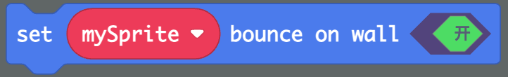
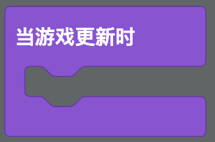
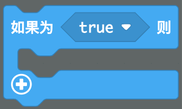
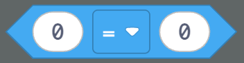
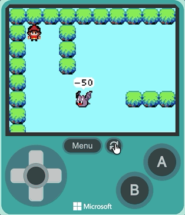

让敌人自己在地图里走来走去，撞墙还会掉头
两种方式二选一：
功能02-地图与墙壁碰撞）在场景中创建一个敌人精灵。
精灵 → 创建 → 将 [变量名] 设为精灵 [图像] 类型 [类型] 到代码区小怪1场景 → Tilemap Operations → 放置 [小怪1] 在图块地图 [列] [行] 上面，把敌人放到地图的某个位置💡 敌人不要放在墙里面，也不要和玩家角色重叠。
给敌人设置速度，让它自己动起来。怎么动？由你自己决定！
精灵 → 物理 → 将 [小怪1] 的速度设置为 vx 50 vy 50，拖动到代码区vx、vy 改成不同的数字测试，看看敌人分别怎么动，把结果记下来：| 测试 | vx | vy | 敌人怎么动？ |
|---|---|---|---|
| 第 1 次 | 50 | 0 | |
| 第 2 次 | -50 | 0 | |
| 第 3 次 | 0 | 50 | |
| 第 4 次 | 0 | -50 | |
| 第 5 次 | 100 | 0 |
💡 vx 是水平速度，正数向右、负数向左；vy 是垂直速度，正数向下、负数向上；设成 0 就是那个方向不动。
敌人走到墙壁时，自动掉头往回走。
精灵 → 特效 → set [小怪1] bounce on wall 开（这个指令还是英文的，意思是"碰到墙壁就反弹"）
💡 bounce on wall 翻译过来就是"碰到墙壁反弹"。打开这个开关后，敌人撞到墙壁会自动掉头，不用自己写判断，并且只需要设置一次。
让敌人把当前的速度说出来，看看 vx 是怎么变化的。
游戏 → 游戏内容 → 当游戏更新时 事件到代码区精灵 → 特效 → [小怪1] say [ :) ]，把内容改成 精灵 → 物理 → [小怪1] 的 [vx]
💡 [小怪1] 的 [vx] 可以随时读出敌人当前的速度。撞墙反弹后 vx 会变成负数，数字也跟着变号。
敌人向右走时面向右，向左走时面向左。
当更新时 的循环里，把上一步的 精灵 say 积木换成 逻辑 → 条件 → 如果 [小怪1] 的 [vx] > 0 那么 ... 否则 ...vx 大于 0（向右走）：用 精灵 → 图像 → 设置 [小怪1] 的图像为 [朝右的图]vx 小于 0（向左走）：用 设置 [小怪1] 的图像为 [朝左的图]

💡 敌人撞墙反弹后 vx 会变成负数，所以向左走时要用朝左的图像。
再添加一个速度不同的敌人，让场景更丰富。
小怪2小怪2 放到地图的另一个位置小怪1 不同的方向和不同的速度小怪2 碰到墙壁反弹小怪2 也会根据移动方向改变朝向运行游戏，检查整体效果，调整不满意的地方。

| 参数 | 作用 | 建议 |
|---|---|---|
速度 vx/vy | 控制敌人巡逻的方向和快慢 | 想横着巡逻就把 vy 设为 0 |
| 敌人位置（列、行） | 控制敌人出生在哪一格图块 | 别放在墙里面 |
| 敌人数量 | 控制场景里有多少个敌人 | 2-3 个就够热闹了 |
vx 和 vy 是不是都被设成了 0bounce on wall 是不是设成了"开"vx > 0）用朝右的图，向左走（vx < 0）用朝左的图